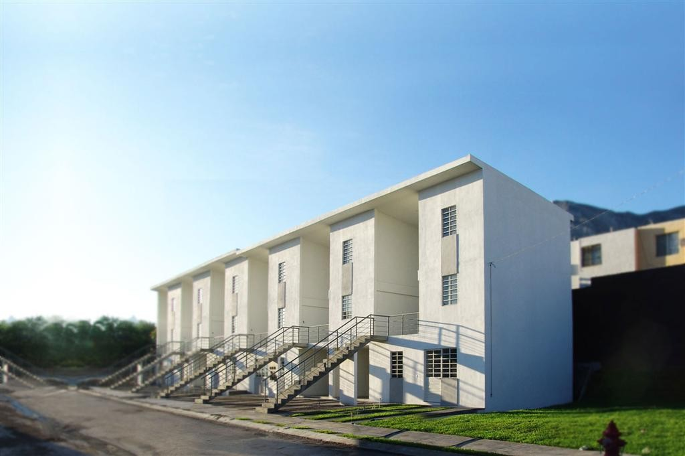

Monterrey - Messico
Monterrey è un complesso residenziale progettato dal gruppo Elemental nel 2010. All'interno di ogni edificio sono presenti due diversi tipi di appartamenti, il "simplex" si sviluppa su un unico livello (piano terra), il "duplex" su due (primo e secondo piano). Analizzando le capacità costruttive della popolazione del luogo e considerando il budget limitato dell'opera, gli appartamenti sono forniti ai futuri proprietari costruiti al 50%. Infatti, da 40 mq forniti,il simplex diventerà di 59 mq mentre il duplex passerà a 76.5 mq. Per le loro intrinseche difficoltà costruttive, gli spazi forniti sono principalmente quelli di servizio come bagno, cucina e vani scale.

hola lola